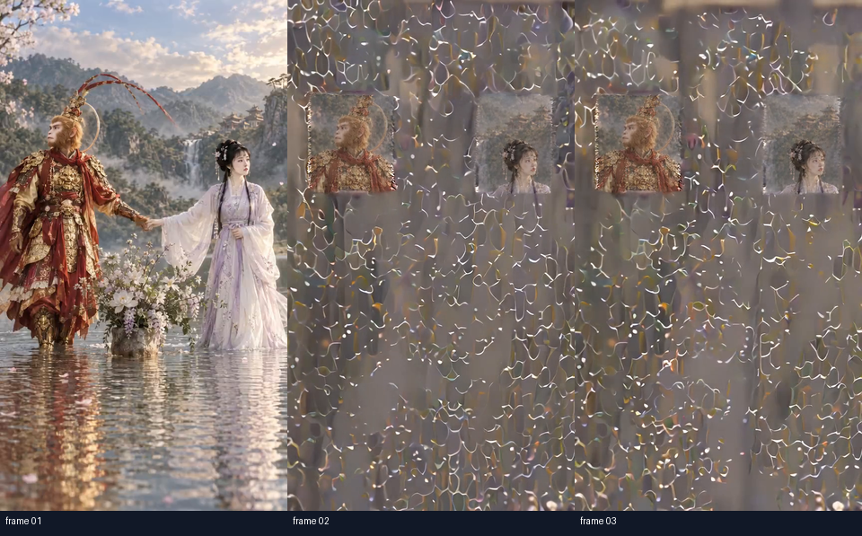
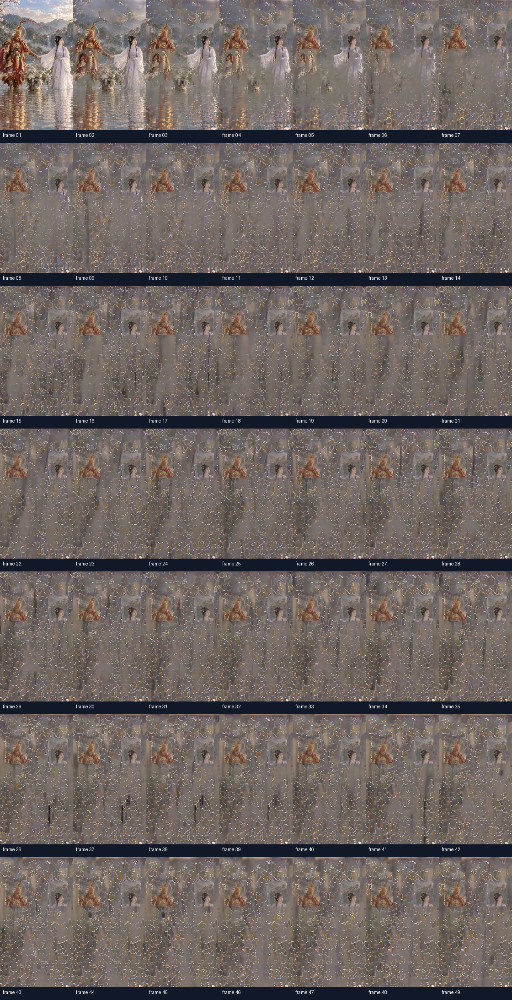

Runtime and video contract passed; assistant candidate visual triage is CHANGES_REQUIRED. Human review remains PENDING.


See qa_report.json and runtime_evidence.json. No production approval is granted.